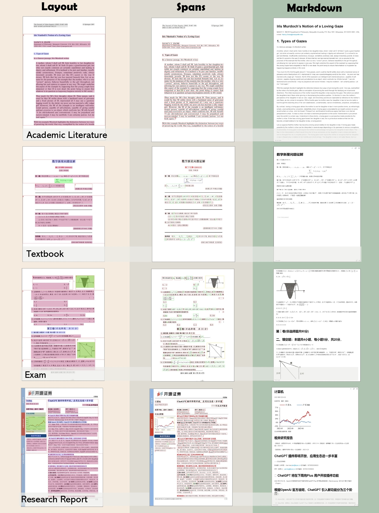
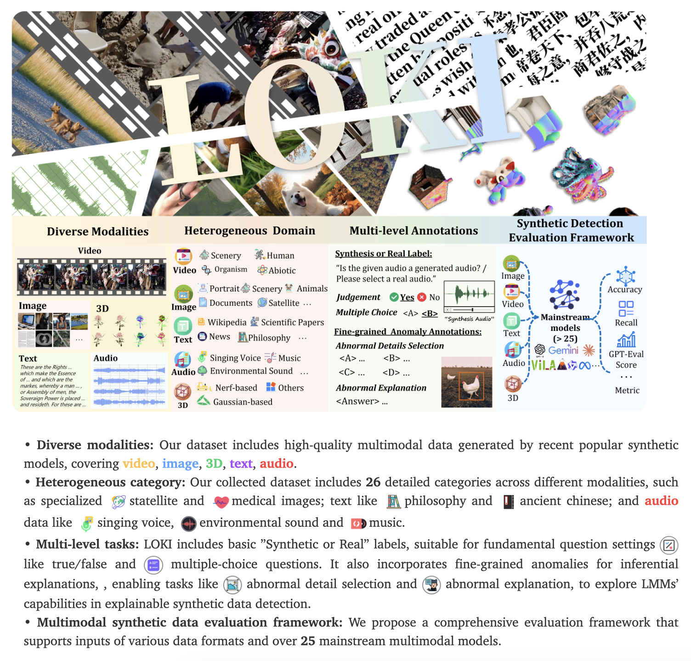
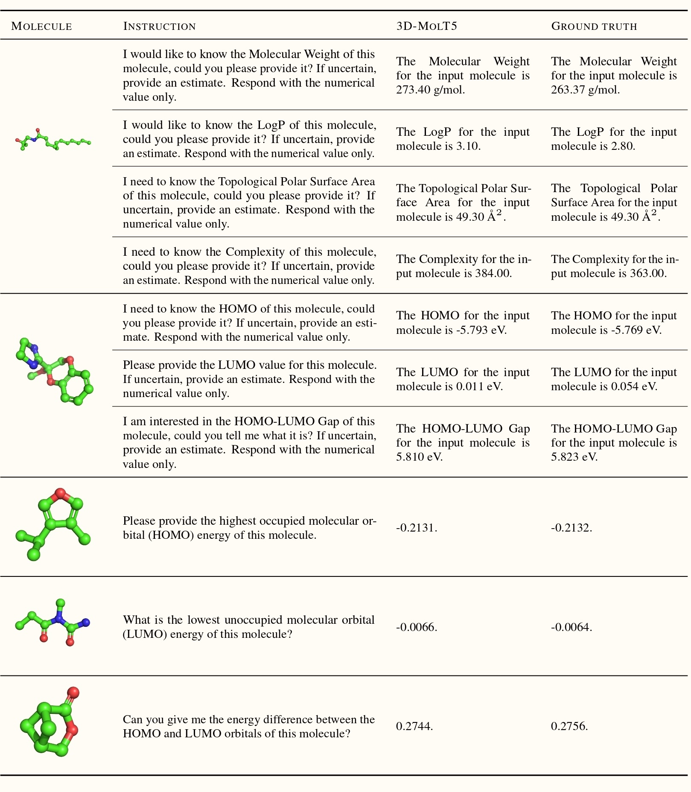

Research Areas
The Data Platform Center creates a bidirectional "AI4Data" and "Data4AI" system, transforming data science with AI and driving model evolution with high-quality data. This ecosystem integrates technologies like LLMs, VLMs, and reasoning models for the co-evolution of data and models.

AI4Data: Intelligent Data Science
Enhancing automation and intelligence across the entire data lifecycle through AI technology:
- MinerU-Scientific Document Understanding Platform: Utilizing multimodal large models to achieve semantic parsing, knowledge extraction, and structured generation of scientific literature, transforming unstructured text into structured text to provide high-quality, reliable corpus for RAG and AI4S.
- Data Evaluation and Selection: Combining large models for data quality assessment, and utilizing metrics that quantify data bias, noise, and coverage to select optimal datasets for downstream tasks.
- Data Synthesis and Detection: Creating high-quality synthetic data through various cutting-edge technologies and large models' strong instruction-following capabilities, while developing advanced algorithms and tools to identify AI-generated content and ensure data trustworthiness.

Data4AI: Data Engineering Revolution for Model Evolution
The performance ceiling of AI models highly depends on the quality and diversity of training data. We focus on three core challenges in the data supply chain:
- Pre-training Data Preparation: Building large-scale multilingual, multi-domain corpora from various sources such as the internet, PDF literature, and e-book libraries, implementing data "refinement" through deduplication, denoising, and toxicity filtering processes to support training requirements for InternLM series and various text and multimodal large models.
- Multilingual and Low-resource Data Enhancement: Focusing on countries along the Belt and Road Initiative and resource-scarce languages (such as Hungarian, Czech, etc.), building large-scale multilingual, multimodal data corpora (the open-sourced InternLM-Wanjuan corpus), promoting the development of small language large models and various potential applications.
- Scientific Intelligence Data Exploration: For high-value AI4Science scenarios, conducting collection, screening, synthesis, and other work on high-quality, high-density scientific intelligence data, and developing important AI4Science research such as scientific intelligence foundation models based on scientific data.

Frontier Technology Exploration
Conducting free exploration of other frontier technologies centered on data, aimed at developing the most advanced large language models, multimodal large models, reasoning large models, scientific large models, and more.
- Cutting-edge model architectures and training methodologies
- Integration of multiple modalities and knowledge sources
- Advanced reasoning capabilities for complex problem-solving
- Domain-specific adaptation for scientific applications